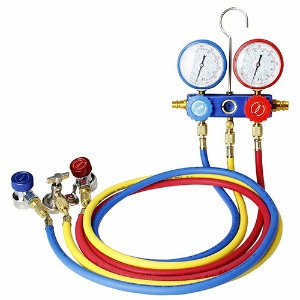
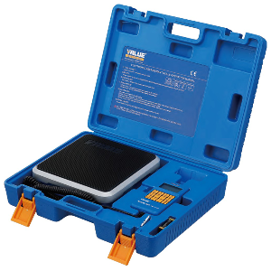
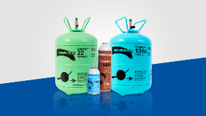
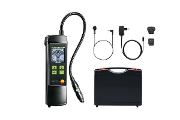

Prepárate y ponte los EPIs. ¡nos ponemos manos a la obra!
Lo primero de todo consulta el REGLAMENTO DE SEGURIDAD PARA INSTALACIONES FRIGORÍFICAS. Si pulsas sobre el texto te llevará al reglamento.
CARGA DE REFRIGERANTE
Herramientas y Equipos de Protección (EPIs)
Lo primero que debemos tener en cuenta es el apartado de 🦺 EPIs (Equipos de protección individual):
- Gafas de seguridad
Protección ocular frente a salpicaduras. - Guantes resistentes
Evitan quemaduras químicas o por frío. - Ropa de trabajo
Protege y permite movilidad. - Calzado de seguridad
Previene lesiones por golpes o caídas.
🔧 HERRAMIENTAS
- Manifold (Puente de manómetros)
Para medir presiones alta y baja y controlar la carga con las llaves de apertura y cierre. - Mangueras de carga
Conectan manómetro, cilindro de refrigerante (manguera amarilla de servicio) y sistema frigorífico (mangueras azul y roja para baja y alta respectivamente).
https://www.maquinas-maquinas.com/maquinaria/alquiler-maquinaria-refrigeracion/puente-de-manometro-y-manguera-para-gas-r-410/ (CC0) - Báscula electrónica
Para pesar el refrigerante con precisión y realizar la carga exacta que necesite nuestra instalación frigorífica.
https://climasuministros.es/es/bascula/125-bascula-carga-gas-refrigerante-aire-acondicionado-100-kg-category.html (CC BY-SA) - Cilindro de refrigerante
Contiene el gas refrigerante. Tiene dos tomas (la de líquido y la de vapor). Dependiendo de si cargamos refrigerante en fase líquida o vapor usaremos una u otra toma. En cilindros donde sólo exista una toma se deberá dar la vuelta a la botella.
https://commons.wikimedia.org/wiki/File:Cover_googleplus.png (CC BY-SA) - Detector de fugas
Localiza escapes en el circuito. Previamente se ha realizado la prueba de presión por lo que no deberían existir fugas. Es una medida de seguridad posterior para asegurarnos que no se va a perder el refrigerante.
https://www.testo.com/es-ES/detector-de-fugas-testo-316-4/p/0563-3164 (CC BY-SA) - Llave ajustable
Abre o ajusta válvulas de servicio que tenemos que operar a la hora de cargar la instalación con refrigerante.
🛑 ¡La seguridad es parte del trabajo profesional!
Nunca realices la carga sin tus EPIs ni sin revisar el equipo.